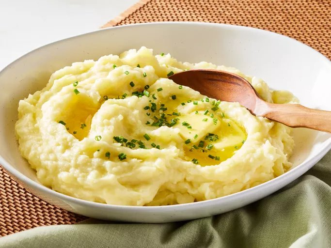

Garlic Mashed Potatoes Recipe

Description
This recipe takes around 25 minutes to finish, 10 minutes of prep time and 25 of cooking time. It makes 6 servings.
From Allrecipes Garlic Mashed Potatoes Recipe
Ingredients
- 2 pounds Yukon gold potatoes, peeled and cut into 1 1/2 inch pieces
- 5 large garlic cloves, peeled and smashed
- 1 tablespoon kosher salt
- 1/3 cup unsalted butter, cut into 8 pieces, plus more for serving
- 3/4 cup whole milk
- 1 teaspoon kosher salt
- 1/4 teaspoon white pepper
Steps
- Combine potatoes, garlic, and 1 tablespoon of the salt in a medium saucepan with enough water to cover by 1 inch. Bring to a boil over high. Reduce heat to medium-low, and simmer until potatoes are fork-tender, 10 to 12 minutes.
- Drain potatoes and return to hot saucepan. Stir until dry, about 1 minute.
- Add butter, 1 piece at a time, stirring gently until melted before the next addition.
- Using a potato masher, mash in milk until smooth. Stir in 1 teaspoon salt and white pepper.
- Transfer potatoes to a serving bowl and top with more butter, if desired.